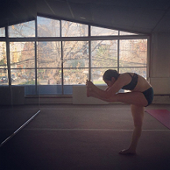

Otras actividades
Yoga Bikram
Este tipo de Yoga nace en India, se compone de una serie de 26 posturas o asanas, que se practican
con una duración de 90 minutos cada clase, en un ambiente de 60% de humedad y 38-42 grados celsius de
temperatura.
Hasta Enero de 2020 practiqué de manera regular esta disciplina. Se debe tener disciplina hasta que se
vuelve
un hábito. El cuerpo alcanza mayores estados de bienestar posteriores a cada clase, todo lo cual se va
sumando
y sin darte apenas cuenta, la fuerza, la flexibilidad, la energía y el equilibrio entre mente y cuerpo
es cada
vez mayor. En esta práctica también hay prejuicios pero todo se va derribando a medida que se libera la
mente de ellos
y se notan los efectos en el bienestar general. Es una práctica muy bonita que te hace estar en sintonía
con el entorno,
que te vuelve más tolerante y provoca que cada nueva clase sea un nuevo momento para intentar llegar más
lejos de donde
pudiste llegar la última vez. Es un desafío constante, pone a prueba el temple, la disciplina y la
tolerancia en todos los sentidos.

Mi red de apoyo
Mis amigos, mi familia y mi pareja son la base de mi núcleo. Somos muy unidos, estamos en constante
comunicación
y en suma son mis afectos quienes hacen posible que pueda enfrentar nuevos desafíos y alcanzar las metas
que me propongo conquistar.
Ellos me impulsan a diario, me motivan, su afecto mantiene mi corazón gordito y son quienes no fallan. Y
aún cuando suceda,
nada está roto o perdido para siempre, todo se puede mejorar, corregir o volver a construir. Y aún
cuando no estuvieran más,
el tiempo vivido siempre queda, nutre y es la sazón que acompaña cada experiencia.
Mi Película Favorita
Sin lugar a dudas mi película hollywoodense favorita de todos los tiempos es Eternal Sunshine
of Spotless Mind protagonizada
por Jim Carrey y Kate Winslet, con la participación de Kirsten Dunst, Mark Ruffalo y Elijah Wood, entre
otros.
Como no quiero hacer spoiler a quien no haya tenido la oportunidad de verla, cosa que recomiendo
encarecidamente, puedo decir de ella que
es un viaje a las decisiones, al quienes somos, qué nos llama la atención, qué nos gusta, qué cosas no.
Y si pudiéramos decidir otra vez, tomaríamos
las mismas elecciones? recorreríamos los mismos caminos? es quizás un verdadero destino las experiencias
que nos toca vivir?
Es una película con una fotografía hermosa, de tonos relacionados a las emociones. Puede ser muy liviana
y con significados muy concretos o bien ir tomando
forma de acuerdo a las conclusiones a que puede hacerte llegar. Me gusta la subjetividad a la que apunta
en el receptor de la trama, los actores cumplen
con sus roles y logran transmitir las emociones que acompañan cada momento. Puede parecer tosca al
principio, o un poco sosa, pero el conjunto, fotografía, trama,
música, etc, la convirtieron en mi película de culto.